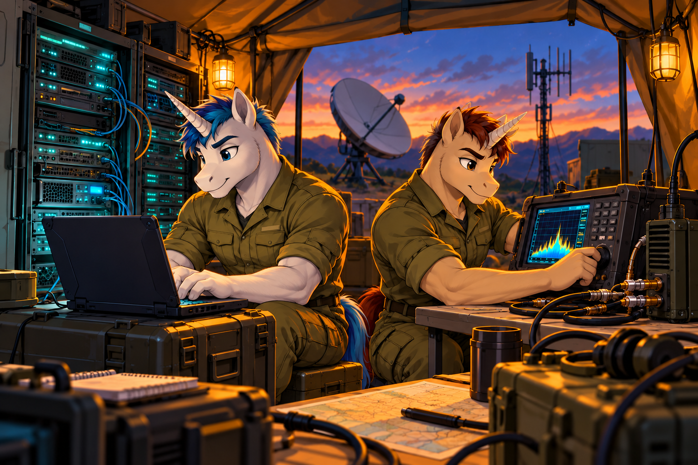
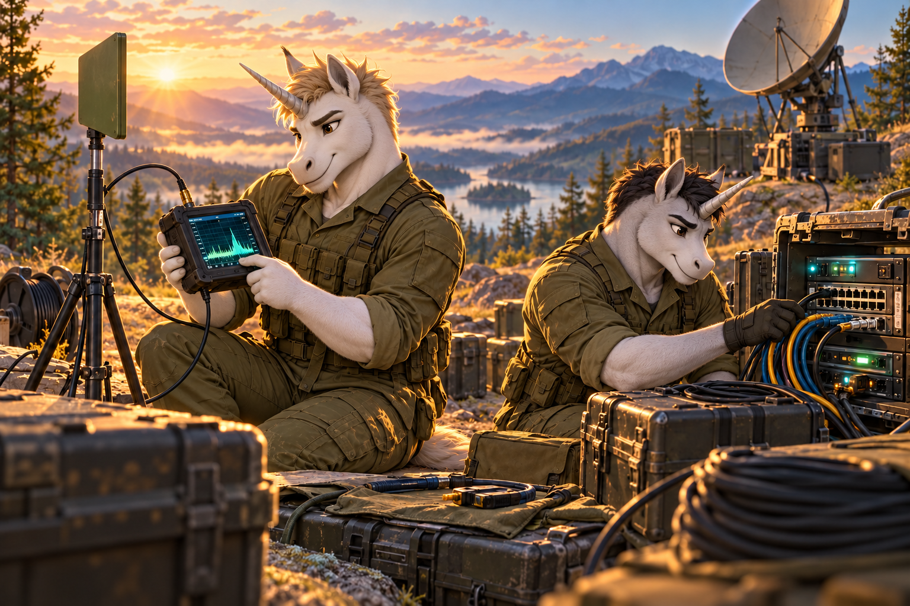
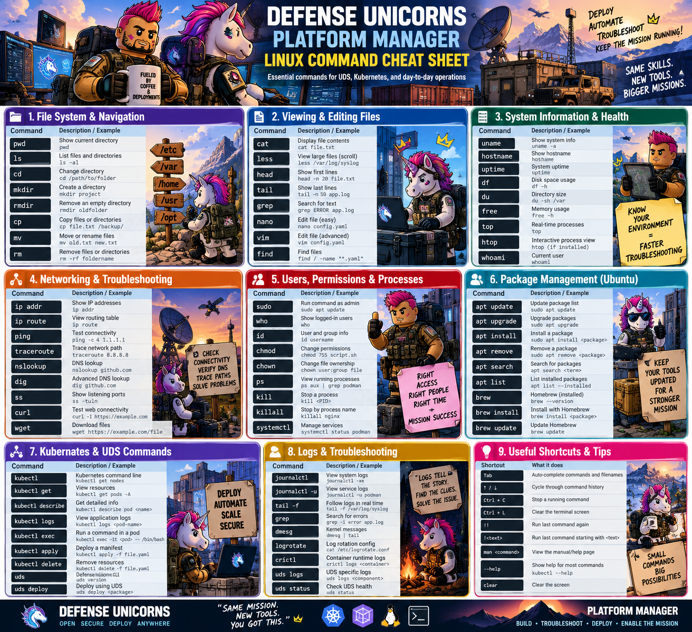

Missing replicas
Stop the training app. Learn why zero desired replicas means no replacement pod.

Explore. Troubleshoot. Restore.
Build confidence one lab at a time.
Your local training cluster, at a glance.
Start the connector in Ubuntu, then open localhost:8765 on your Windows PC.
python3 local/bridge.py --context k3d-udsThe token is kept only for this page session.
Open Connection settings to authorize this session.
Choose one exercise. Inspect the evidence. Restore and verify.
Stop the training app. Learn why zero desired replicas means no replacement pod.
Keep the pod running but break its Service selector. Follow the path to the missing endpoints.
Introduce a bad executable. Use events to understand a container that cannot start.
Choose an action to see its result.
No readings yet.
Start Docker, then run the included check script. Full UDS needs at least 4 CPU cores, 10 GiB RAM allocated to Docker and 40 GiB free storage.
python3 local/labctl.py check
Having the UDS CLI installed does not mean a UDS cluster is running. Follow START-HERE.md if the context or Package CRD is missing.
Build online once. Deploy into your local UDS demo using its exact context name.
python3 local/labctl.py build python3 local/labctl.py deploy --context k3d-uds
Image and Kubernetes manifests travel together in the generated Zarf archive.
Connect, refresh and check pod readiness, desired replicas, ready endpoints and the UDS Package status. Open the app to verify the actual request path.
Open training applicationA successful Kubernetes command alone does not prove the application works.
Stop replicas: compare desired count with pods. Break Service: pods may stay Ready while endpoints disappear. Bad startup: inspect events for the invalid executable; app logs may be absent.
Restore, wait, refresh and test the app again. The dashboard never marks a repair successful just because a patch was accepted.
Inspect generated network policies and the Package resource. In Grafana Explore, query:
up{job="mission-api"}Open local GrafanaUse the Monitoring tab for this PC’s native setup. The UDS Grafana URL is only available if its platform monitoring stack was separately installed.
Keep the built Zarf archive. With UDS already running, disconnect external internet temporarily and redeploy that local archive using the same deploy command. Keep Docker and WSL running.
This exercises delivery without external downloads; it does not certify a fully air-gapped environment. See the guide for prerequisites and recovery.
Interactive training simulation. These are not readings from your computer.
All simulated services operational.
18 short lessons · 90 checks · explanations for every option. Read a lesson, try its check, then review missed answers.

Record observations, hypotheses, next checks, and recovery evidence. Keep passwords and personal data out of study exports.
Run these commands inside Ubuntu WSL2, except “Check WSL,” which runs in Windows PowerShell. This training page cannot execute local commands.
Use the Live UDS Lab tab and the included START-HERE.md guide. The connector runs inside Ubuntu and serves this dashboard on your PC.
Observe → collect evidence → make one change → verify.
Choose the symptom below. Read what it means, run the read-only check in Ubuntu, and compare your output with the clue. Recovery instructions tell you what changes state.
Examples use k3d-uds and tpol-training. These guides do not automatically run commands. The live exercise buttons act only after you authorize the connector.
Read the command. Understand the pieces. Know what will change.
| File | Plain-language job |
|---|---|
| index.html | The page’s structure: headings, buttons and panels. |
| styles.css | The appearance: colors, spacing and mobile layout. |
| app.js / live.js | Browser behavior: simulator, lessons, requests and live results. |
| local/bridge.py | The local gatekeeper: checks access and runs fixed lab operations. |
| local/labctl.py | The helper that checks tools, builds a package and deploys it. |
| package/workload.yaml | The training app’s Kubernetes instructions. |
| package/uds-package.yaml | Requests UDS networking and monitoring integration. |
| package/zarf.yaml | Lists the files and image included in the portable package. |
| sw.js | Caches static learning files for offline use. |
Terminal: the window where you type. Shell: the program interpreting your command. Flag: an option such as --context. Argument: a value a command receives. Namespace: a named area grouping Kubernetes resources. Pod: a unit containing one or more containers. Image: the packaged app used to start a container. Manifest: a file describing desired resources. API: a defined way for programs to exchange requests. JSON: structured data sent between this page and connector. YAML: the configuration format used in the package files.
Your illustrated cheat sheet, with readable explanations alongside it.

UDS logs: uds logs reads recent UDS CLI logs; use kubectl logs for a pod’s application output. Check uds --help for your installed version rather than assuming uds status exists.
File removal: the poster’s rm -rf example deletes recursively without prompting. Practice navigation and reading first; the searchable guide labels commands that change or delete things.
Pod shells: kubectl exec needs an existing pod, the right namespace and a program present inside its image. Many images do not include Bash.
Host versus container: systemctl and journalctl apply to services managed by systemd on that host. Docker Desktop’s engine may run outside your Ubuntu distribution. crictl needs access to a compatible container-runtime endpoint and is not a replacement for ordinary Docker commands.
Examples: names such as file.txt, PID and /path/to/folder are placeholders. Replace them with verified targets. The search cards explain where each example runs and whether it changes anything.
Local Prometheus and Grafana, connected to your existing training app.
Authorize in Live UDS Lab to read local metrics. No readings have been taken.
Collection uses a pod port-forward. UP does not prove that ingress, the Service selector, Windows, or your RF link is healthy. Values are snapshots; refresh to get new evidence.
Run from the new app folder in Ubuntu. This reuses tools in ~/tpol-monitoring and preserves existing data and configuration. Stop your three old foreground commands with Ctrl+C first if you want this helper to manage their lifecycle. Keep Docker Desktop and your UDS cluster running.
python3 local/monitoring.py run --context k3d-uds
The helper starts missing services and retries a disconnected pod port-forward. If it finds an existing listener, it leaves it alone. Ctrl+C stops only processes started by this helper. It does not start automatically after a PC reboot.
New installation only: the next command downloads and checksum-verifies pinned official Linux amd64 binaries. It does not install a paid service.
python3 local/monitoring.py install
Missing app or stopped cluster? Restore the app in Live UDS Lab, or start Docker and the existing cluster. Do not rebuild the Zarf package merely to reopen Grafana.
In Grafana, choose Dashboards → New → Import. Upload the JSON and select your working Prometheus data source. It plots scrape success, app RAM, CPU, and Go tasks. Use Last 15 minutes and refresh every 15 seconds.
If no data source exists: Connections → Data sources → Prometheus → server URL http://127.0.0.1:9090 → No authentication → Save & test. This URL works for the native Ubuntu installation; localhost inside a future container would refer to that container instead.
Initial Grafana login for a fresh install is admin / admin. Set a new local password when prompted. Existing credentials and dashboards remain yours.
Prometheus collects numbers with labels and time. Grafana visualizes stored samples. Neither component is a SIEM, and neither detects every outage automatically.
No automatic Windows, radio, network-device, or whole-cluster telemetry is added here. Pod readiness remains in Live UDS Lab. End-to-end availability must be checked through the normal application URL.
Connection refused on 9898: the port-forward stopped. Restart the monitoring session and verify the app has a running pod.
No data: check job="mission-api", time range, and targets. CPU rate needs multiple samples. No data is not zero.
Grafana 404 at grafana.admin.uds.dev: this native setup uses localhost:3000. A UDS hostname needs a separately installed Grafana workload and route.
Data source fails: make sure Prometheus is on 9090 and the Grafana server is in the same Ubuntu environment.
Port in use: find the existing terminal or inspect ss -ltnp. Reuse the correct service; do not kill an unknown process.
Learn the workflow, inspect connector activity, then deploy Wazuh when capacity permits.
Security Information and Event Management collects and analyzes security events. An alert is a reason to investigate; it is not automatic proof of an attack.
Browser exercises below use fictional events. Connector audit reads show actual activity in this app. Wazuh is a separate real SIEM setup that needs installation and end-to-end verification.
Full Wazuh requires at least 8 GB Docker-host memory and 50 GB storage. Use it in a separate session with UDS and Redpanda stopped. The setup helper checks capacity and never silently stops your cluster.
Compare an isolated typo, repeated access denials, and an authorized lab change. Nothing is sent to a real login endpoint.
Authorize in Live UDS Lab first. No events loaded.
Records include access accepted/denied and fixed lab operations. No bearer tokens, passwords, or command output are recorded. This is not Windows event collection, Kubernetes API auditing, or a production SIEM. A shared session token does not identify individual people.
Read the complete SIEM setup guide. The helper uses Wazuh 4.14.8’s official Docker deployment, adds connector-log collection and training rules, and publishes only its dashboard on localhost:8443. No paid cloud account is created.
Prepare only downloads the upstream configuration and creates your local integration:
python3 local/siem.py prepare python3 local/siem.py check
On this small host, stop the monitoring helper with Ctrl+C and stop the existing UDS cluster before running the Wazuh session. Stopping preserves its data; deleting is not required.
k3d cluster stop uds docker compose -f integrations/redpanda/compose.yml stop
Docker-host kernel setup may be needed. Read the guide before changing vm.max_map_count. Once checks pass:
python3 local/siem.py up python3 local/siem.py status python3 local/siem.py test-rule python3 local/siem.py sample
Look for rule 100101 in the rule test. Then open Wazuh dashboard and verify the new event with rule.id:100101 and data.training:true. Only then is sample ingestion verified. Starting containers alone is not proof.
When finished:
python3 local/siem.py stop k3d cluster start uds python3 local/monitoring.py run --context k3d-uds
The bridge UI remains usable while the cluster is stopped, but live cluster actions will be unavailable. Wazuh data persists. Windows agents, Kubernetes audit feeds, and real RF telemetry require additional enrollment and configuration.
A Kafka-compatible platform that stores and moves streams of events between applications.
An application sends records, such as a radio link-status update. Real equipment requires a supported data interface; the records here are fictional.
A named topic groups records. Each partition is an ordered log with its own offsets. There is no implied global ordering across partitions.
An application reads records. Separate consumer groups keep independent progress. Falling behind creates lag. Redpanda transports events; downstream tools perform analysis.
Topic: rf-events · two fictional partitions · two independent consumer groups. Records stay only in this page session.
Produce a record to begin. No live broker is contacted.
This optional lab starts one Redpanda broker and Console with a combined 2 GiB container memory limit. It has no broker failover, no production hardening, and no link to your radio. Stop Wazuh before starting it on this PC.
docker compose -f integrations/redpanda/compose.yml up -d docker compose -f integrations/redpanda/compose.yml exec redpanda rpk cluster info
When the broker responds, create a small practice topic with one partition and one replica:
docker compose -f integrations/redpanda/compose.yml exec redpanda rpk topic create rf-events --partitions 1 --replicas 1
Produce a harmless fictional radio event:
echo '{"source":"training-radio","training":true,"link":"up","snr_db":18}' | docker compose -f integrations/redpanda/compose.yml exec -T redpanda rpk topic produce rf-eventsRead one record from the start:
docker compose -f integrations/redpanda/compose.yml exec redpanda rpk topic consume rf-events --offset start --num 1
Open Redpanda Console · 8088. Verify your record in rf-events. An existing topic is not an error requiring deletion. If consumption waits, confirm production succeeded.
Stop while preserving records:
docker compose -f integrations/redpanda/compose.yml stop
Full explanations and troubleshooting: Redpanda lab guide. No event pipeline to Wazuh is automatically created.
Select a component or trace a path. Every moving packet here is simulated.
Choose a path or click a component to highlight its connections.
Choose a guided exercise above.
This checks the optional operations Prometheus, Grafana and alert inbox. It does not read your native metrics on 9090 or control any service.
Authorize in Live UDS Lab first.
Includes Loki, Alloy, Blackbox Exporter and Alertmanager, plus separate practice Prometheus/Grafana and a demo app. On your 16 GB PC, use a separate session with UDS, Wazuh and Redpanda stopped. The guide explains how to return to your current lab without deleting data.
Open the complete operations setup and troubleshooting guide
Run from the extracted v4 project directory in Ubuntu:
python3 local/operations_lab.py check python3 local/operations_lab.py validate python3 local/operations_lab.py up
Open Operations Grafana, Operations Prometheus, Alertmanager and the local notification inbox. Existing native Grafana remains on 3000.
Follow the guide to generate a log, stop only the demo, observe an alert, restore it and confirm resolution. Its optional stream add-on connects your real Redpanda rf-events topic to Alloy → Loki → Grafana. This is not automatically linked to Wazuh.
Explore the Future planning map for identity/Keycloak, secrets and certificates, network policy and RBAC, GitOps, image registry and scanning, storage and backup, traces, device exporters, redundancy, DNS and time synchronization.
These are design and verification lessons with example programs, not an installation of all those products. A real deployment selects a supported combination for its mission, resource limits and authorization requirements.
Mark only checks you have actually performed. Capture details in the Lessons notebook and export them. This checklist is separate and stays in this browser.
Self-reported learning milestones—not production approval.
Build a mock domain. Onboard a user. Prove what they can and cannot access.
Browser-only practice. No Windows Server, real directory, passwords, domain join or SIEM connection is created. Use fictional names. Progress stays in this browser.
Windows PowerShell examples for a separate, authorized Windows Server lab. These never run here. The IP/domain names are fictional lab choices; do not apply them to your current PC.
AD DS: the domain directory service. Domain controller: the server hosting it. DNS: helps clients locate the domain. OU: organizes directory objects and supports policy/delegation. Security group: a collection used to assign access. UPN: user@domain sign-in name. Authentication: proving identity. Authorization: deciding allowed actions. An OU is not a security group.
In an actual deployment, configure supported Windows editions, DNS, time synchronization, access delegation, backup and recovery. AD DS is not Microsoft Entra ID or Keycloak; integration between products is a separate design.
Full walkthrough and Microsoft references13 original lessons to practice alongside TCM Programming 100. Read, predict, run in Ubuntu, then explain. This is companion practice, not the TCM course content.
Choose Learning only in the desktop launcher, then open this tab. In Ubuntu, enter the extracted project folder and run:
python3 --version python3 python-lab/lessons/01_status.py
The browser checks your predictions and saves notes. It does not run Python code. All runnable files and fictional data are included in the ZIP.
Setup, troubleshooting and optional live UDS collectionFollow the phases in order. Projects use fictional data first; local network and UDS reads are optional later steps.
Change the failed-login count and predict which branch runs. This demonstrates the rule in JavaScript; it does not execute arbitrary Python.
if failed_logins > 5:
print("Investigate")
else:
print("Below threshold")